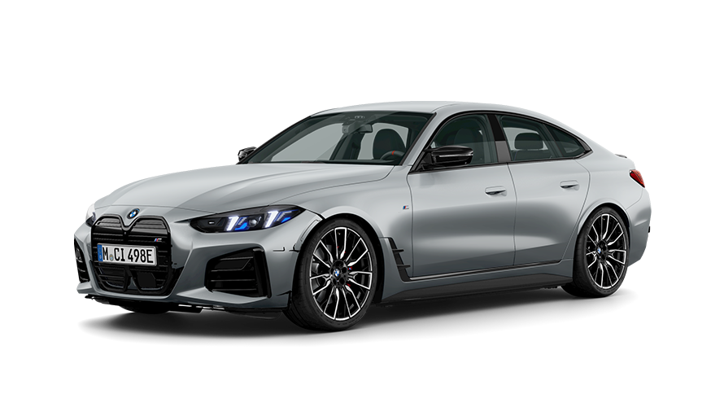

Bayerische Motoren Werke AG, trading as BMW Group (commonly abbreviated to BMW (German pronunciation: , sometimes anglicised as Bavarian Motor Works), is a German multinational manufacturer of luxury vehicles and motorcycles headquartered in Munich, Bavaria, Germany. The company was founded in 1916 as a manufacturer of aircraft engines, which it produced from 1917 to 1918 and again from 1933 to 1945 creating engines for aircraft that were used in the Second World War. The company's automobiles are marketed under the BMW, Mini and Rolls-Royce brands, and motorcycles are marketed under the BMW Motorrad brand. In 2023, BMW was the world's ninth-largest producer of motor vehicles, and the 6th largest by revenue,[3] with 2,555,341 vehicles produced in that year alone.[4] In 2023, the company was ranked 46th in the Forbes Global 2000.[5] The company has significant motor-sport history, especially in touring cars, sports cars, and the Isle of Man TT. BMW is headquartered in Munich and produces motor vehicles in Germany, the United Kingdom, the United States, Brazil, Mexico, South Africa, India, China, and previously also in the Netherlands (ceased in 2023).[6] The Quandt family [de] is a long-term shareholder of the company, following investments by the brothers Herbert and Harald Quandt in 1959 that saved BMW from bankruptcy, with the remaining shares owned by the public.
